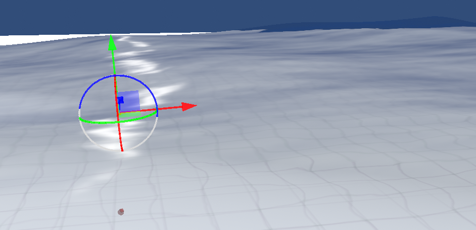
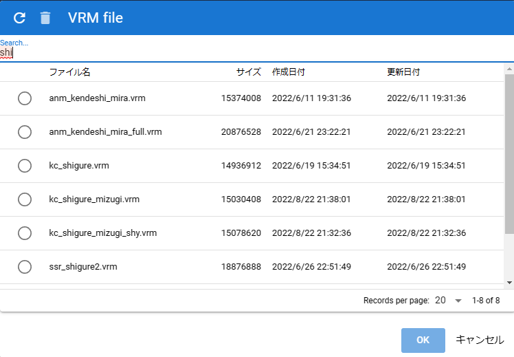
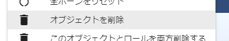
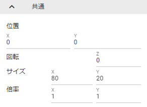
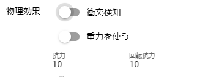

10.1. Basics of object manipulation
10.1.1. Open an Object
Please press each button from the home tab or 3D model tab of the ribbon bar.
Home tab |
Model tab |
|
|


- For VRMs
After loading, the terms of use confirmation screen (VRM information screen) will be displayed. If you don’t give permission there, it won’t really load.
- For OtherObject
When opening general Fbx, obj, etc., it can be opened by specifying it as it is in the file dialog, but there may be multiple necessary files such as textures.
In this application, due to the effect of the library used, it is possible to read, for example, a zip file as it is.
Example: Combine .obj, .mtl, .png, etc. into one zip file
By reading the zip file created in this way with this application, you can read it with the texture etc. attached normally.
Warning
The 3D model file must have the appropriate texture settings in advance.
- other than that
It will appear immediately after loading.
Note
10.1.2. simple shaped objects
You can add a basic shape object that will be treated as OtherObject.
Click “Basic Shapes” from the 3D Model tab of the ribbon bar.
The following types of basic figures can be opened.
球、カプセル、円柱、立方体、平面（3D）、四辺形（2D）、水面
special surface object
A water surface object is a special object that keeps moving with animated waves.
There are a lot of texture properties, but if you set them in detail, you can express not only water and sea surfaces but also other uses. Please make good use of it.
Hint
The Cutout shader in the basic shape texture properties allows you to position and direct 3D models to match real walls and objects in VR/AR space. you can easily add reality-aware effects like those found in standard settings such as MetaQuest3 The VR/AR shader can be used to create a 3D model of reality in a VR/AR space.
See Arrange objects according to reality for details.
10.1.3. Open from history
Once you open VRM/OtherObject and images (including UI images), the history is saved in the app. You can open it from the history in the app without having to follow the dialog or drag it the next time you launch it.
Click History on the Home tab of the ribbon bar and select the target object type.

The internal storage dialog opens, so select the target object and open it.
Hint
When opening from the history, you can narrow down the target file by entering it in the search box at the top of the list.

Note
For each OS version, the file path, not the object file itself, is saved as history. Therefore, if you move or delete the actual file, you will no longer be able to open it from this app.
10.1.4. Delete history
You can delete the accumulated history.
delete individually
Check the objects you want to delete.
Click at the top of the Internal Storage dialog.
Remove All
Press
Settingson the Home tab of the ribbon bar.Press
Clearon the files tab.
10.1.5. Open app sample data
With VRM , OtherObject , and Image in the ribbon bar, you can open sample data saved on the app’s server as well as from your device or Google Drive.
We plan to add sample data from time to time.
A storage dialog will open for each item and you can select it from the list.
10.1.6. Object selection
All 3D objects display IK markers when they are ready to be manipulated. To make it operational, select it in the object list. (Selecting Text and UImage does not display IK markers)

When the corresponding object becomes operable, the IK marker will be displayed like this. (IK markers for other objects are hidden.)
Warning
Even if you select an object attached to VRoid/VRM, the IK marker will not be displayed. Unequip it to make it operable again.
10.1.7. Delete object
To delete an object, right-click in the object list and click Delete Object.
Note
Animation project timelines (rolls) cannot be deleted this way. See Various animation settings to delete both objects and timelines (roles).
10.1.8. Object rename
Objects can be renamed. This is different from the name of the timeline (role) described later, and is the name/title of the object itself.
Right-click the target in the object list and click Rename.
Enter in the input dialog and press the OK button to confirm.
10.1.9. focus the camera
Adjust the position and rotation of the camera so that the target object fits in the main camera as much as possible.
Right-click the object in the object list and click “Focus Camera”.
10.1.10. Delete both this object and role
Unlike deleting an object, it deletes both the object itself and the role (timeline).
Unless you have a very special reason, such as not wanting to delete the timeline (role) that registered the keyframe, we recommend deleting it with Delete both this object and role.
Right-click the target in the object list and click “Delete both this object and the role”.
10.1.11. Move, rotate and scale objects
Common properties are available for all objects. Here you can move, rotate and scale.
3D object |
2D object |
|
 |

10.1.11.1. 3D object
3D objects operate on the X, Y and Z axes respectively. The movement and rotation here will be the object itself. (VRM does not cover IK of each part of the body)
As a similar operation method, there is also an operation handle displayed by clicking the IK marker.
It also supports keyboard operation. See Keyboard shortcut for detailed operation instructions.
Warning
Only 3D objects can be operated with the keyboard.
TextandUImageare not keyboard accessible.
- Consider 360 degree rotation
When
Consider 360 degree rotationis turned on, it tries to rotate as much as possible when the rotation angle is reached. For example, if you want your Y-axis to be:
frame
Y-axis rotation angle
1
0
10
359
If you set this option to OFF and register a keyframe, you can only switch the angle immediately considering clockwise/counterclockwise rotation from 0 degrees. If it is ON, it will try to make one rotation, eg 10..30..50..185..200.. between frames 2-9.
However, due to the internal rotation specifications of this application, it cannot be rotated from 0 to 360 degrees. Rotate to 359 degrees once, then register a keyframe on the next frame to rotate from 359 to 360 degrees. At that time, it is necessary to turn off
Consider 360 degree rotation.Warning
This option is not saved as motion data. This is an option only when registering a keyframe. Toggling object selection will return this toggle to OFF.
- fixed ratio
You can also specify the X, Y, and Z magnification, but you can also fix the ratio. If you turn on
Fix ratio, there will be only one input field. If you enter in this state, you can change the size while maintaining the current ratio.- jumping/swaying
There are jump and shake functions as options related to the position and rotation of the object itself.
Jumping works if the count is
1 or more.Linear and random shakes only work when each is
On.
10.1.11.2. 2D object
Unlike the Unity editor, 2D objects have limited input fields for clarity.
Position is X, Y, rotation is Z axis only.
- Size
Unlike 3D objects, it indicates the size of the area to be drawn.
- Scale
It has the same size of meaning as a 3D object.
10.1.12. Physical effect
This is a feature added in ver 2.4.0.
See Physical effects (common) for a description of the property.
The IK marker in this application is only for moving objects. This setting determines how objects move when they collide with each other.
- React when objects collide
Turn on the
Use Collisiontoggle switch. Please set it for all target objects.- Adjust movement power after collision
Change the value of
drag. Default is 10. The lower the value, the longer it will take for the object to stop moving.- Adjust the rotational force after collision
Change the value of
Angular Drag. Default is 10. The lower it is, the longer it will take for the object to stop rotating.- follows gravity
Turn on the
Use gravitytoggle switch. The moment you turn it on, objects will fall towards the ground. While you are moving it with an IK marker, it will remain at that position and rotation, but when you stop operating it, it will fall again according to gravity.
Hint
When used in VR/AR space, it can be used with a more realistic feeling. If you have a MetaQuest 3 or later device that has practical hand tracking, you can also grab an object in your hand and throw it to hit another object.
You may be able to use this app for a variety of purposes, not just creating poses and animations.